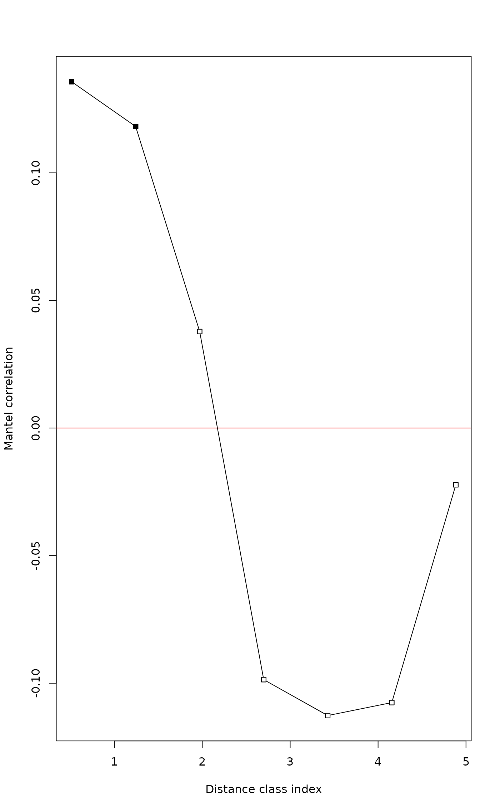
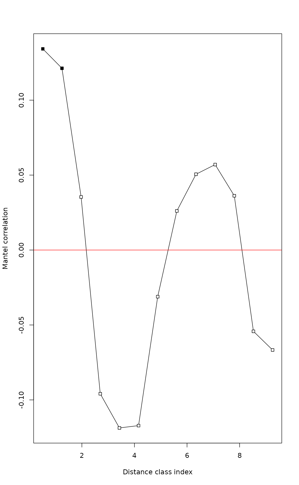

mantel.correlog.RdFunction mantel.correlog computes a multivariate
Mantel correlogram. Proposed by Sokal (1986) and Oden and Sokal
(1986), the method is also described in Legendre and Legendre (2012,
pp. 819--821).
mantel.correlog(D.eco, D.geo=NULL, XY=NULL, n.class=0, break.pts=NULL,
cutoff=TRUE, r.type="pearson", nperm=999, mult="holm", progressive=TRUE)
# S3 method for mantel.correlog
plot(x, alpha=0.05, ...)An ecological distance matrix, with class
either dist or matrix.
A geographic distance matrix, with class either
dist or matrix. Provide either D.geo or
XY. Default: D.geo=NULL.
A file of Cartesian geographic coordinates of the
points. Default: XY=NULL.
Number of classes. If n.class=0, the Sturges
equation will be used unless break points are provided.
Vector containing the break points of the distance
distribution. Provide (n.class+1) breakpoints, that is, a list with
a beginning and an ending point. Default: break.pts=NULL.
For the second half of the distance classes,
cutoff = TRUE limits the correlogram to the distance classes
that include all points. If cutoff = FALSE, the correlogram
includes all distance classes.
Type of correlation in calculation of the Mantel
statistic. Default: r.type="pearson". Other choices are
r.type="spearman" and r.type="kendall", as in functions
cor and mantel.
Number of permutations for the tests of
significance. Default: nperm=999. For large data files,
permutation tests are rather slow.
Correct P-values for multiple testing. The correction
methods are "holm" (default), "hochberg",
"sidak", and other methods available in the
p.adjust function: "bonferroni" (best known, but
not recommended because it is overly conservative), "hommel",
"BH", "BY", "fdr", and "none".
Default: progressive=TRUE for progressive
correction of multiple-testing, as described in Legendre and Legendre
(1998, p. 721). Test of the first distance class: no correction;
second distance class: correct for 2 simultaneous tests; distance
class k: correct for k simultaneous tests. progressive=FALSE:
correct all tests for n.class simultaneous tests.
Output of mantel.correlog.
Significance level for the points drawn with black
symbols in the correlogram. Default: alpha=0.05.
Other parameters passed from other functions.
A correlogram is a graph in which spatial correlation values
are plotted, on the ordinate, as a function of the geographic distance
classes among the study sites along the abscissa. In a Mantel
correlogram, a Mantel correlation (Mantel 1967) is computed between a
multivariate (e.g. multi-species) distance matrix of the user's choice
and a design matrix representing each of the geographic distance
classes in turn. The Mantel statistic is tested through a
permutational Mantel test performed by vegan's
mantel function.
When a correction for multiple testing is applied, more permutations are necessary than in the no-correction case, to obtain significant p-values in the higher correlogram classes.
The print.mantel.correlog function prints out the
correlogram. See examples.
A table with the distance classes as rows and the
class indices, number of distances per class, Mantel statistics
(computed using Pearson's r, Spearman's r, or Kendall's tau), and
p-values as columns. A positive Mantel statistic indicates positive
spatial correlation. An additional column with p-values corrected for
multiple testing is added unless mult="none".
The n umber of distance classes.
The break points provided by the user or computed by the program.
The name of the correction for multiple testing. No
correction: mult="none".
A logical (TRUE, FALSE) value
indicating whether or not a progressive correction for multiple
testing was requested.
The number of distance classes for which Mantel tests have been computed and tested for significance.
The function call.
Legendre, P. and L. Legendre. 2012. Numerical ecology, 3rd English edition. Elsevier Science BV, Amsterdam.
Mantel, N. 1967. The detection of disease clustering and a generalized regression approach. Cancer Res. 27: 209-220.
Oden, N. L. and R. R. Sokal. 1986. Directional autocorrelation: an extension of spatial correlograms to two dimensions. Syst. Zool. 35: 608-617.
Sokal, R. R. 1986. Spatial data analysis and historical processes. 29-43 in: E. Diday et al. [eds.] Data analysis and informatics, IV. North-Holland, Amsterdam.
Sturges, H. A. 1926. The choice of a class interval. Journal of the American Statistical Association 21: 65–66.
# Mite data available in "vegan"
data(mite)
data(mite.xy)
mite.hel <- decostand(mite, "hellinger")
# Detrend the species data by regression on the site coordinates
mite.hel.resid <- resid(lm(as.matrix(mite.hel) ~ ., data=mite.xy))
# Compute the detrended species distance matrix
mite.hel.D <- dist(mite.hel.resid)
# Compute Mantel correlogram with cutoff, Pearson statistic
mite.correlog <- mantel.correlog(mite.hel.D, XY=mite.xy, nperm=49)
summary(mite.correlog)
#> Length Class Mode
#> mantel.res 65 -none- numeric
#> n.class 1 -none- numeric
#> break.pts 14 -none- numeric
#> mult 1 -none- character
#> n.tests 1 -none- numeric
#> call 4 -none- call
mite.correlog
#>
#> Mantel Correlogram Analysis
#>
#> Call:
#>
#> mantel.correlog(D.eco = mite.hel.D, XY = mite.xy, nperm = 49)
#>
#> class.index n.dist Mantel.cor Pr(Mantel) Pr(corrected)
#> D.cl.1 0.514182 358.000000 0.135713 0.02 0.02 *
#> D.cl.2 1.242546 650.000000 0.118174 0.02 0.04 *
#> D.cl.3 1.970910 796.000000 0.037820 0.04 0.06 .
#> D.cl.4 2.699274 696.000000 -0.098605 0.02 0.08 .
#> D.cl.5 3.427638 500.000000 -0.112682 0.02 0.10 .
#> D.cl.6 4.156002 468.000000 -0.107603 0.02 0.12
#> D.cl.7 4.884366 364.000000 -0.022264 0.10 0.14
#> D.cl.8 5.612730 326.000000 NA NA NA
#> D.cl.9 6.341094 260.000000 NA NA NA
#> D.cl.10 7.069458 184.000000 NA NA NA
#> D.cl.11 7.797822 130.000000 NA NA NA
#> D.cl.12 8.526186 66.000000 NA NA NA
#> D.cl.13 9.254550 32.000000 NA NA NA
#> ---
#> Signif. codes: 0 ‘***’ 0.001 ‘**’ 0.01 ‘*’ 0.05 ‘.’ 0.1 ‘ ’ 1
# or: print(mite.correlog)
# or: print.mantel.correlog(mite.correlog)
plot(mite.correlog)

# Compute Mantel correlogram without cutoff, Spearman statistic
mite.correlog2 <- mantel.correlog(mite.hel.D, XY=mite.xy, cutoff=FALSE,
r.type="spearman", nperm=49)
summary(mite.correlog2)
#> Length Class Mode
#> mantel.res 65 -none- numeric
#> n.class 1 -none- numeric
#> break.pts 14 -none- numeric
#> mult 1 -none- character
#> n.tests 1 -none- numeric
#> call 6 -none- call
mite.correlog2
#>
#> Mantel Correlogram Analysis
#>
#> Call:
#>
#> mantel.correlog(D.eco = mite.hel.D, XY = mite.xy, cutoff = FALSE, r.type = "spearman", nperm = 49)
#>
#> class.index n.dist Mantel.cor Pr(Mantel) Pr(corrected)
#> D.cl.1 0.514182 358.000000 0.134229 0.02 0.02 *
#> D.cl.2 1.242546 650.000000 0.121270 0.02 0.04 *
#> D.cl.3 1.970910 796.000000 0.035413 0.10 0.10 .
#> D.cl.4 2.699274 696.000000 -0.095899 0.02 0.08 .
#> D.cl.5 3.427638 500.000000 -0.118692 0.02 0.10 .
#> D.cl.6 4.156002 468.000000 -0.117148 0.02 0.12
#> D.cl.7 4.884366 364.000000 -0.031123 0.04 0.14
#> D.cl.8 5.612730 326.000000 0.026064 0.12 0.20
#> D.cl.9 6.341094 260.000000 0.050573 0.08 0.24
#> D.cl.10 7.069458 184.000000 0.057017 0.04 0.20
#> D.cl.11 7.797822 130.000000 0.036195 0.16 0.32
#> D.cl.12 8.526186 66.000000 -0.054242 0.10 0.40
#> D.cl.13 9.254550 32.000000 -0.066677 0.04 0.32
#> ---
#> Signif. codes: 0 ‘***’ 0.001 ‘**’ 0.01 ‘*’ 0.05 ‘.’ 0.1 ‘ ’ 1
plot(mite.correlog2)

# NOTE: 'nperm' argument usually needs to be larger than 49.
# It was set to this low value for demonstration purposes.